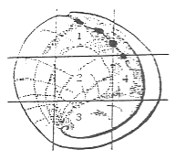
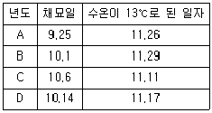

수산양식산업기사 (2016-08-21 기출문제)
1과목: 어류양식
1. 뱀장어 양어장(양만장)에 있어 물만들기란?
- 물이 맑게 되도록 유지하는 것
- 수초가 적절히 자라도록 하는 것
- 식물 플랑크톤이 잘 발생할 수 있도록 하는 것
- 동물 플랑크톤이 잘 발생할 수 있도록 하는 것
(정답률: 69%)

2. 조피볼락의 특징과 가장 거리가 먼 것은?
- 체내수정을 하여 새끼를 출산하는 어류이다.
- 육질은 참돔, 넙치와 같이 백색육이다.
- 자연산의 최소성체는 수컷은 2년생, 암컷은 3년생이다.
- 조피볼락의 출산은 주로 일출 근처(오전 4~6시)에 이루어진다.
(정답률: 67%)
3. 다음 중 해상 가두리 양식장으로 가장 적합한 장소는?
- 담수의 유입이 있는 강 하구 역
- 부영양화가 많이 된 내만
- 파도의 영향이 적으며 조류의 소통이 좋은 내만
- 수온이 낮으며 투명한 외해
(정답률: 78%)
4. 양식대상종의 육종(育種)에 대한 설명으로 옳지 않은 것은?
- 유용동물의 유전적 형질을 인간이 바라는 방향으로 개량하는 것을 말한다.
- 품종을 개량하여 생산량을 증가시키는 것을 말한다.
- 번식에 의한 종묘확보와 사육이 어려운 것을 주 대상으로 선택한다.
- 육종의 수단으로는 염색체 조작, 성전환, 잡종화, 유전자 이식 등이 있다.
(정답률: 67%)
5. 일반적으로 어류의 인공종묘생산에서 로티퍼의 먹이로 가장 많이 사용되는 식물플랑크톤은?
- 키토세로스(Chaetoceros)
- 클로렐라(Chlorella)
- 모노크리시스(Monochrysis)
- 나비큘라(Navicula)
(정답률: 73%)
6. 생물여과조 중 질산화 세균이 번식할 수 있는 여과 재료가 필요하지 않는 것은?
- 침수 여과조
- 살수 여과조
- 회전 원판 여과조
- 활성오니 여과조
(정답률: 63%)
7. 양식 사료에서 부족 시 영양성 근육 발육 이상, 생식기관의 이상, 지방간을 일으키는 비타민은?
- Thiamin
- Tocopherol
- Choline
- Biotin
(정답률: 53%)
8. 활어 운반에 대한 설명으로 틀린 것은?
- 활어 운반 시 어체에 스트레스를 주지 않도록 충격을 최소화한다.
- 운반 용수의 온도는 생리 대사기능이 활발히 유지될 수 있도록 적정 성장 온도보다 높게 유지한다.
- 좁은 용기에 고밀도로 수용하므로, 산소 보충을 해야 한다.
- 운반 시 어류의 대사 또는 체표 분비에 의한 오물은 여과장치를 이용하여 제거한다.
(정답률: 75%)
9. 넙치 완숙란의 특징이 아닌 것은?
- 분리 부성란이다.
- 알 지름은 0.94~0.98mm 정도이다.
- 유구는 1개이다.
- 색은 옅은 갈색을 띄고 있다.
(정답률: 60%)
10. 미꾸라지 인공채란에 쓰이지 않는 용액은?
- 링거액
- 뇌하수체호르몬
- 식염
- 칼륨용액
(정답률: 62%)
11. 다음 중 무지개 송어를 마취시켜 채란하고자 할 때 가장 적당한 마취제의 농도는?
- MS-222 0.⑤ ~ 0.1‰ 농도에서 퀴날딘 0.1 ~ 0.02‰ 농도
- MS-222 0.1 ~ 0.15‰ 농도에서 퀴날딘 0.01 ~ 0.02‰ 농도
- MS-222 0.15 ~ 0.2‰ 농도에서 퀴날딘 0.02 ~ 0.04‰ 농도
- MS-222 0.2 ~ 0.25‰ 농도에서 퀴날딘 0.04 ~ 0.06‰ 농도
(정답률: 55%)
12. 틸라피아 양식의 산란습성 및 부화에 관한 설명 중 틀린 것은?
- 틸라피아는 산란기에는 못바닥에 산란구덩이를 파고 산란한다.
- 부화된 치어는 어미의 구강 내에서 10 ~ 15일간 머무른다.
- 암컷이 수컷보다 성장이 빠르다.
- 성숙기에 달한 암컷은 일반 해수지역에서는 산란이 억제된다.
(정답률: 70%)
13. 다음 중 하구의 기수역 또는 연안 부근에 있는 유휴 수면의 자연 생산력을 이용한 조방적 양식에 가장 적합한 어종은?
- 붕어
- 숭어
- 은어
- 송어
(정답률: 49%)
14. 어류의 번식 조장 방법이 되지 못하는 것은?
- 산란장 조성
- 식용어 양성
- 어류의 적정어획
- 인공수정 방류
(정답률: 64%)
15. 수온 13 ~ 18℃에서 넙치의 수정란이 부화 하는 데 소요되는 시간으로 가장 알맞은 것은?
- 10 ~ 28시간
- 30 ~ 39시간
- 40 ~ 49시간
- 50 ~ 78시간
(정답률: 56%)
16. 어류의 일반적인 1일 사료공급량을 결정짓는 요인과 그 관계에 대한 설명으로 틀린 것은?
- 1일 사료 공급량은 건조 사료 중량으로 몸무게의 1 ~ 5%(보통은 2 ~ 3%) 범위이다.
- 생활온도 범위 내에서는 온도가 낮을수록 많이 먹는다.
- 같은 수온조건에서는 어릴수록 자기 체중에 대한 먹이의 비율이 높아진다.
- 잉어와 같이 위가 없는 어류는 먹이를 여러번에 나누어 주어야 한다.
(정답률: 69%)
17. 무지개송어 치어 방양 시(사육조의 폭 1m, 길이 1m, 수온 15℃일 때) 1m2당 적정 방양 밀도는?
- 1g 내외의 치어 200 ~ 300마리
- 2g 내외의 치어 300 ~ 500마리
- 3g 내외의 치어 500 ~ 600마리
- 4g 내외의 치어 600 ~ 900마리
(정답률: 50%)
18. 방어알은 다음 중 어느 것에 해당하는가?
- 응집 부성란
- 분리 부성란
- 부착 침성란
- 불부착 침성란
(정답률: 57%)
19. 실뱀장어의 최대 소상(遡上)조건의 설명으로 옳은 것은?
- 대조 시 만조
- 조금 때나 간조
- 맑은 날 오전
- 일출과 일몰시
(정답률: 62%)
20. 감성돔 인공 종묘 생산 시의 적정 비중은?
- 1.010 ~ 1.016
- 1.018 ~ 1.024
- 1.030 ~ 1.035
- 1.038이상
(정답률: 70%)
2과목: 무척추동물양식
21. 사육조건이 좋은 경우의 참전복 유생의 부유기간으로 가장 적합한 것은?
- 12일 내외
- 9일 내외
- 6일 내외
- 3일 내외
(정답률: 52%)
22. 먹이생물을 치설로 섭이하는 종은?
- 진주조개
- 가리비
- 키조개
- 전복
(정답률: 58%)
23. 통영 연안에 있어 참굴의 단련종묘를 만들기 위한 단련에 가장 알맞은 노출시간은?
- 1 ~ 2시간
- 3 ~ 4시간
- 5 ~ 6시간
- 7 ~ 8시간
(정답률: 42%)
24. 우리나라 연안에 서식하고 있는 보리새우의 주 산란기로 옳은 것은?
- 2 ~ 3월
- 4 ~ 5월
- 7 ~ 8월
- 10 ~ 11월
(정답률: 45%)
25. 소라의 방란, 방정이 이루어지는 시기 중 성기의 수온은?
- 11 ~ 12℃
- 16 ~ 17℃
- 23 ~ 24℃
- 29 ~ 30℃
(정답률: 31%)
26. 정상적인 경우 우렁쉥이 채란에서 부착할 때까지 소요되는 기간은?
- 2일
- 4일
- 6일
- 8일
(정답률: 40%)
27. 보리새우가 산란하여 유생의 각 단계별 생존율이 부화율 50%, Nauplius기 50%, zoea기 40%, Mysis기 50%, post larva기 60%인 경우 난에서부터 치하까지의 전체적인 생존율은?
- 0.035%
- 0.3%
- 3.0%
- 30.0%
(정답률: 46%)
28. 보리새우류의 미시스기 동안 탈피하는 회수는?
- 1회
- 2회
- 3회
- 4회
(정답률: 52%)
29. 채묘예보는 부유 유생 수 조사와 부착 치패 수 조사에 의한 방법을 사용하게 된다. 다음 중 부착 치패 수를 조사할 수 없는 종류는?
- 굴
- 바지락
- 가리비
- 피조개
(정답률: 56%)
30. 피조개에 대한 설명으로 가장 거리가 먼 것은?
- 우리나라의 산업적인 고막류 가운데 가장 깊은 곳까지 서식한다.
- 한반도 전 연안에 분포한다.
- 서식수심은 간조선으로부터 50m 내외까지이다.
- 주 산란기는 대체로 8 ~ 9월 사이이다.
(정답률: 35%)
31. 천해의 생태구역 중에서 양성장으로서의 이용률이 가장 낮은 곳은?
- 조간대
- 아천해대
- 중천해대
- 상천해대
(정답률: 58%)
32. 참굴 종묘의 전기채묘 실시 시기로 가장 적합한 것은?
- 수온 상승기의 전반기
- 수온 상승기의 후반기
- 수온 하강기의 전반기
- 수온 하강기의 후반기
(정답률: 52%)
33. 참굴 수하식 양성의 장점이 아닌 것은?
- 성장이 비교적 빠르다.
- 저질에 매몰되거나 해적생물의 피해가 적다.
- 시설비가 적게 들고 관리가 편리하다.
- 해면을 입체적으로 이용할 수 있다.
(정답률: 56%)
34. 전복이 상처를 입을 경우 가장 치명적인 부위는?

- 1(중앙부 상단)
- 2(중앙부 중간)
- 3(중앙부 하단)
- 4(중앙부 우측)
(정답률: 59%)
35. 다음 중 일시부착성 패류로만 묶인 항목은?
- 굴, 진주담치
- 참가리비, 진주조개
- 바지락, 키조개
- 피조개, 비단가리비
(정답률: 49%)
36. 인공채묘 후 수하식으로 양성하는 종은?
- 우렁쉥이
- 대하
- 보리새우
- 해삼
(정답률: 62%)
37. 다음 중 대합의 이동이 가장 심한 경우는?
- 수온이 높은 시기와 유속이 빠른 때
- 다 큰 성패와 해수비중이 낮을 때
- 조금 물때와 먹이가 적을 때
- 투명도가 작을 때와 영양염류가 많을 때
(정답률: 53%)
38. 참가리비에 대한 설명 중 틀린 것은?
- 한류계로서 우리나라 동해안과 일본에 분포한다.
- 주로 많이 서식하는 수심은 20 ~ 35m 이다.
- 부유유생이 많이 발생하는 곳은 연안반류에 의해 와류가 생기는 곳이다.
- 참가리비는 이동이 거의 없어 치패와 성패의 서식장이 같다.
(정답률: 61%)
39. 성게에 속하는 말똥성게의 먹이 가운데 먹이 가치가 가장 우수한 먹이는?
- 미역
- 대황
- 파래
- 우뭇가사리
(정답률: 33%)
40. 다음 중 굴 양식장의 노화방지 대책으로 가장 적합한 것은?
- 적조예방
- 밀식방지
- 황토살포
- 부유생물 번식
(정답률: 65%)
3과목: 해조류양식
41. 김의 조가비사상체는 어장의 조건에 따라 적기에 채묘할 수 있도록 시기를 조절해야 하는데 조절할 사항으로 적당하지 않은 것은?
- 수온이 21~23℃가 되도록 온도 처리를 한다.
- 2000 ~ 3000lux의 밝기로 8 ~ 10시간 광선 처리를 한다.
- 비닐주머니에 넣어 -10℃가 되도록 동결 보존한다.
- 약품처리를 하여 건조시켜 보관한다.
(정답률: 49%)
42. 다음 해조류 중에서 한천의 원료가 아닌 종은?
- 우뭇가사리
- 꼬시래기
- 불등풀가사리
- 모자반
(정답률: 46%)
43. 염성이 약한 김은 어떤 갯병에 강한가?
- 흰갯병
- 붉은갯병
- 호상균병
- 구멍갯병
(정답률: 30%)
44. 다시마 양식의 솎음에 대한 내용으로 가장 적합한 것은?
- 큰 것부터 차례로 솎아낸다.
- 처음부터 너무 많이 솎아내면 경합이 없어서 성장이 나쁘다.
- 성장이 끝난 것부터 차례로 솎아준다.
- 초기에 완전히 솎아 주어야 좋다.
(정답률: 49%)
45. 김의 채묘일자와 당년의 수온이 13℃로 된 때의 일자가 표와 같다면 갯병으로 흉작이 될 수 있는 가능성이 높은 연도는?

- A, B
- A, C
- B, C
- C, D
(정답률: 42%)
46. 김 엽체의 성숙상태를 육안으로 판별하는 기준은?
- 웅성부는 황백색이고 자성부는 적갈색이다.
- 자성부는 색이 연하나 웅성부는 색이 진하다.
- 웅성부는 적녹색이고 자성부는 황백색이다.
- 자성부는 둥글고 웅성부는 길다.
(정답률: 41%)
47. 미역 양식에서의 가이식 필요성에 대한 설명 중 적합하지 않은 것은?
- 아포체가 육안적인 크기로 될 때까지는 가이식한 것이 본 양성 시설을 한 것보다 생장이 빠르다.
- 부니와 잡생물의 제거 작업 또는 싹녹음 예방을 위한 대피 작업이 용이하다.
- 배우체의 성숙과 수정은 오랫동안 계속 일어나기 때문에 배우체가 씨줄틀에 밀접해 있는 것이 불리하다.
- 유엽이 아직 윤안적으로 보이기 전에 씨줄을 어미줄에 감는 작업을 할 때 부주의로 종묘가 손상될 우려가 많다.
(정답률: 37%)
48. 미역의 초기 배양에 관한 설명 중 틀린 것은?
- 배우체의 생장 적온 13 ~ 16℃이다.
- 배양을 시작할 때의 조도는 5000 ~ 6000 lux정도가 필요하다.
- 채묘틀은 광선을 균일하게 받을 수 있도록 1주일에 1회 정도 채묘틀의 상하를 바꿔준다.
- 물갈이는 처음에 채묘 3, 4일 후에 갈아주고, 그 후 7 ~ 10일에 1회 정도로 한다.
(정답률: 34%)
49. 김발의 냉장 시 씨발을 건조시키는 주 이유는?
- 호흡작용의 억제
- 갯병의 병균폐사
- 세포내의 결빙예방(結氷豫防)
- 광합성 작용의 억제
(정답률: 54%)
50. 청각의 종묘생산에서 채묘 대상이 되는 것은?
- 수배우자
- 암수 배우자의 접합자
- 성숙된 배우자낭
- 암배우자
(정답률: 35%)
51. 다음 중 풀가사리의 생장과 착생에 있어 가장 적당한 노출시간은?
- 1 ~ 2시간
- 4 ~ 5시간
- 7 ~ 8시간
- 9 ~ 10시간
(정답률: 46%)
52. 김 조가비사상체에서 황반병의 특징이 아닌 것은?
- 주로 고수온기에 발병된다.
- 전염성이 매우 강하다.
- 4 ~ 5월에 집중적으로 나타난다.
- 호염기성 세균이 원인으로 알려져 있다.
(정답률: 27%)
53. 미역 양식 관리 중 수심 조절로 올바른 것은?
- 규조류가 많은 곳은 수심 30 ~ 40cm 정도에 시설한다.
- 생장이 늦어지면 3 ~ 4m 깊이에 시설한다.
- 12월에 수심을 1 ~ 1.5m로 유지한다.
- 2월 이후에는 해수 표면에 유지한다.
(정답률: 37%)
54. 알긴산의 원료로 사용되는 해조류는?
- 다시마
- 청각
- 꼬시래기
- 파래
(정답률: 48%)
55. 다시마의 억제 배양 양식에서 5 ~ 6월에 인공채묘한 배우체를 고수온기에 생장을 일위적으로 중지했다가 9 ~ 10월에 발아를 관리하여 바다 수온이 몇 도 이하일 때 본 양성을 하는가?
- 10℃
- 14℃
- 18℃
- 22℃
(정답률: 33%)
56. 냉장 김발 제작 시 김 엽체의 수분 함유량을 어느 정도로 하는 것이 좋은가?
- 10 ~ 20%
- 20 ~ 40%
- 40 ~ 60%
- 60 ~ 80%
(정답률: 49%)
57. 다음 해조류 중에서 Phycobillin 색소를 갖는 종류는?
- 녹조류
- 갈조류
- 홍조류
- 규조류
(정답률: 45%)
58. 다음 바다식물문 중에서 엽록소 a와 c를 가지는 계열의 해조류는?
- 남조류
- 녹조류
- 갈조류
- 홍조류
(정답률: 42%)
59. 참김의 영양번식관계를 바르게 설명한 것은?
- 3 ~ 10cm 크기에서 가장 많이 방출한다.
- 250㎛ ~ 1mm 크기의 유아기에 한정된다.
- 성체가 되어도 중성포자를 방출하고 2,3월에도 2차아를 방출한다.
- 중성포자에 의한 2차적인 번식이 알려져 있지 않다.
(정답률: 23%)
60. 미역의 포자엽 고르기에 대한 설명 중 틀린 것은?
- 가급적 크고 두꺼운 것이 좋다.
- 다갈색이나 흑갈색이면서 가장자리의 색깔이 짙은 것이 좋다.
- 포자엽이 황갈색이고 단단하며 점액이 적은 것이 좋다.
- 심한 풍파가 있었던 직후의 포자엽은 좋지 않다.
(정답률: 52%)
4과목: 수산생물
61. 수산생물의 호흡으로 수중에 이산화탄소량이 증가할 때 변화되는 수질에 대한 설명으로 가장 적합한 것은?
- 산성화된다.
- 중성이 된다.
- 알칼리화된다.
- pH의 변화는 없다.
(정답률: 52%)
62. 다음 연체동물 중 분류학상 가장 거리가 먼 것은?
- 전복
- 소라
- 모뿔조개
- 군소
(정답률: 28%)
63. 수산생물의 생식도 숙도조사를 통하여 산란기, 산란장, 포란수, 재생산력 등을 구명하는데, 여기서 사용되는 생식선 숙도지수를 나타내는 영문약자는?
- HSI
- GSI
- PSI
- SPI
(정답률: 58%)
64. 극피동물에 있어서 관족(管足)의 주기능이 아닌 것은?
- 배설
- 섭식
- 번식
- 이동
(정답률: 53%)
65. 다음 어류 중 방패비늘을 가지는 어종은?
- 괭이상어
- 먹장어
- 가물치
- 농어
(정답률: 47%)
66. 갑각류 중 요각류에 대한 설명으로 옳은 것은?
- 갑각류 중 가장 원시적인 종류이다.
- 두 개의 원형 또는 타원형의 껍데기에 싸여 있어 작은 조개를 닮았다.
- 담수 또는 해산어류의 피부나 새강 그리고 양서류에 기생하여 피를 빨아 먹는다.
- 칼라누스류, 사이클로프스류, 닻벌레 등이 이에 속한다.
(정답률: 50%)
67. 다음 중 일반적으로 열대성이며 협온성 어류는?
- 잉어류
- 붕어류
- 연어류
- 다랑어류
(정답률: 57%)
68. 외양에서 서식하는 유영 어류의 주 특성이 아닌 것은?
- 계절회유를 한다.
- 군(School)을 이룬다.
- 스스로 빛을 낼 수 있다.
- 부유생물을 먹이로 한다.
(정답률: 57%)
69. 자포동물에 속하지 않은 것은?
- 산호류
- 해면류
- 말미잘류
- 해파리류
(정답률: 50%)
70. 규조류만으로 묶어진 것은?
- 나비쿨라 - 스켈레토네마 - 김노디늄
- 케토세로스 - 니치아 - 세라튬
- 야광충 - 코시노디스쿠스 - 나비쿨라
- 스켈레토네마 - 멜로시라 - 리조솔레니아
(정답률: 46%)
71. 다음 종류 중 직장호흡(직장호흡)을 하는 종은?
- 개불류
- 산우렁류
- 갯지렁이류
- 해파리류
(정답률: 56%)
72. 일반적으로 1회 산란으로 생애를 마치는 종이 아닌 것은?
- 연어
- 칠성장어
- 문어
- 참복
(정답률: 55%)
73. 북반구 온대 연안 바다숲(해중림)의 주된 해조류는?
- 녹조류
- 홍조류
- 갈조류
- 남조류
(정답률: 39%)
74. 어류의 체형 중 측편형에 속하지 않는 것은?
- 넙치
- 전어
- 참돔
- 양태
(정답률: 50%)
75. 대합과 대합 속에서 발견되는 대합속살이게의 상호작용은 어떤 관계인가?
- 편리공생
- 상해
- 상호부조
- 편해공생
(정답률: 55%)
76. 만조선 이상의 조수 웅덩이(tide pool)에서 그 분포가 가장 적은 종류는?
- 녹조류
- 남조류
- 홍조류
- 갈조류
(정답률: 44%)
77. 적조 원인생물이 아닌 종류는?
- Gymnodinium
- Porphyra
- Gonyaulax
- Cochlodinium
(정답률: 48%)
78. 부영계를 수직으로 3등분했을 때, 해양의 기초생산 대부분을 차지하며 다양한 생물종이 나타나는 곳은?
- 연안대
- 표층대
- 중층대
- 심층대
(정답률: 65%)
79. 홍조식물의 특색이라고 볼 수 없는 것은?
- 피코빌린 색소가 있다.
- 편모는 2~4개가 있다.
- 일반적으로 녹조식물 및 갈조식물보다 깊은 곳에 서식한다.
- 세포막은 셀룰로오즈와 한천질로 구성되어 있다.
(정답률: 46%)
80. 일반적으로 대륙붕이라 불리며 수심 200m까지의 해저면을 일컫는 말은?
- 조상대
- 조간대
- 천해계
- 심해계
(정답률: 49%)
5과목: 수질분석 및 양식생물
81. 참굴의 유생부착시기에 부착생물인 따개비 및 진주담치가 동시에 부착하였을 때 구제법으로 올바른 것은?
- 채묘기를 수면쪽으로 올려준다.
- 채묘기를 육상에 일정시간 노출시킨다.
- 채묘기를 육상으로 올려 담수약욕 처리한다.
- 채묘기를 육상으로 올려 따개비 및 진주담치 유생을 떼어낸다.
(정답률: 48%)
82. 물이 및 닻벌레가 처음 번식하기 시작하는 수온은?
- 10℃ 이상
- 14℃ 이상
- 20℃ 이상
- 25℃ 이상
(정답률: 37%)
83. 각각 시험을 하기 위해 혼합한 시료 중에서 분리하여 취한 물을 무엇이라 하는가?
- 개체시료
- 시수
- 검수
- 검액
(정답률: 33%)
84. 뱀장어 기적병의 예방대책이 될 수 없는 것은?
- 프라지콴텔을 경구 투여한다.
- 가을, 겨울철 추가종묘를 넣지 말아야 한다.
- 먹이 길들이는 시기에는 먹이 투여량을 적게 해야 한다.
- 수온변화기는 먹이 투여량을 줄이고, 연 1회 못을 정리하고 소독해야 한다.
(정답률: 40%)
85. 윙클러법으로 용존 산소량을 정량할 때 종점 판별에 사용되는 것은?
- 전분
- 우라닌-전분
- 페놀프탈렌
- 에리오크롬블랙티
(정답률: 41%)
86. 수중 용존유기물질을 산화시키는 데 소비되는 산화제에 대응하는 산소량을 ppm으로 나타낸 것은?
- DO
- BOD
- COD
- TO
(정답률: 58%)
87. 암모니아에 의한 잉어나 뱀장어의 아가미에 나타나는 증상으로 옳지 않은 것은?
- 아가미 출혈과 심할 경우 괴사가 일어난다.
- 아가미 혈관 내에 기포가 생긴다.
- 아가미 조직에 점액에 과다 분비된다.
- 아가미 상피세포의 비대 증생이 관찰된다.
(정답률: 31%)
88. 불순물이 최대로 제거되어 있고 함량이 명시되어 있어서 다른 용액의 역가를 결정할 때 기준으로 쓸 수 있는 시약은?
- 특급시약
- 1급시약
- 특수시약
- 표준시약
(정답률: 43%)
89. 송어의 고창증은 먹이 중에 함유된 미생물에 의하여 발생된다. 주로 어떤 원인에 의한 것인가?
- 먹이 중에 함유된 물곰팡이가 위 내에서 번식하기 때문이다.
- 먹이 중에 함유된 효모가 위 내에서 번식하기 때문이다.
- 먹이 중에 함유된 Aeromonas 균이 위 내에서 번식하기 때문이다.
- 먹이 중의 세균이 위 내에서 이상 번식하기 때문이다.
(정답률: 36%)
90. 잉어에 감염된 솔방울병에 대한 설명 중 옳은 것은?
- 유수지에서 발병율이 높다.
- 급격한 수온 증가 시에 발병률이 높다.
- 전신에 증세가 나타난 후 1 주일 정도 지나면 죽기 시작한다.
- 복부가 팽만하며 안구는 함입된다.
(정답률: 41%)
91. 질산은의 보관법으로 가장 적합한 것은?
- 갈색병이나 흑지를 이용하여 어둡고 차가운 곳에 둔다.
- 투명한 병에 넣어 시원한 곳에 둔다.
- 투명한 유리병에 넣어 어두운 곳에 둔다.
- 폴리에틸렌 병에 넣어 차가운 곳에 둔다.
(정답률: 52%)
92. 2 ~ 6cm 정도의 무지개송어나 산천어의 치어에 많이 발생하는 바이러스성 질병은?
- VHS병
- Virus성 신장염
- SVC병
- IPN병
(정답률: 39%)
93. 해수의 pH 변화에 관하여 틀린 것은?
- 해수는 pH 변화에 대하여 완충작용을 한다.
- 식물의 광합성작용이 활발하면 pH는 약간 높아진다.
- 해수의 pH는 약간 알칼리성을 띤다.
- 유화수소(H2S)가 발생하면 알칼리성을 띤다.
(정답률: 54%)
94. 다음 중 염소량 측정 방법으로 가장 정밀한 것은?
- 우라닌 지시약 법
- 크롬산칼륨 지시약 법
- 전위차 측정법(전기전도도)
- 비색관에 의한 비색법
(정답률: 42%)
95. 다음 질병 중 그 병원체의 대핵이 말굽형으로 생긴 것은?(오류 신고가 접수된 문제입니다. 반드시 정답과 해설을 확인하시기 바랍니다.)
- 방어의 백점병
- 잉어의 에피스틸리스병
- 뱀장어의 트리코프리아병
- 잉어의 에이메리아병
(정답률: 22%)
96. 양식장용수 관리 방법 중 순환여과식 양식에 대한 설명으로 올바른 것은?
- 배출수 처리가 간단하다.
- 양수용 소비전력이 많이 소비된다.
- 충분한 양의 물을 지속적으로 공급해주어야 한다.
- 별도의 시설이 필요 없으며 자연적인 환경에서 사육가능하다.
(정답률: 45%)
97. 산천어에서 발생하는 고창증에 대한 설명이 옳은 것은?
- 부레 속에 가스가 충만하여 복부가 팽만된다.
- 위 내에는 회갈색의 액체가 충만되어 있다.
- 테라마이신을 어체중 1kg 당 100mg 정도를 투여하면 치료된다.
- 이 병원체는 조건에 따라 균사와 후막포자를 형성한다.
(정답률: 46%)
98. 마소텐으로 구제하지 못하는 것은?
- 닻벌레
- 물벼룩
- 흡충류
- 백점병
(정답률: 46%)
99. 이른 봄에 잉어나 뱀장어에 궤양병이 발생될 때 관찰되는 병원체는 주로 어떤 것인가?
- Epistylis 충, Myxidium 충
- Aeromonas 균, Epistylis 충
- Nocardia 균, Pseudomonas 균
- Ichthyophonus 균
(정답률: 42%)
100. 다음 중 양식장용수의 생물학적 여과과정(3단계)에 속하지 않는 것은?
- 오존처리
- 무기화
- 질산화
- 탈질화
(정답률: 49%)